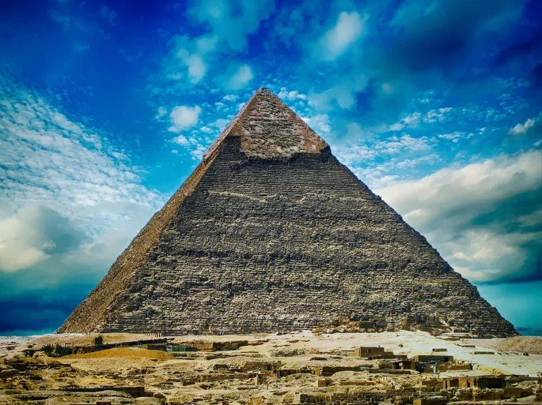
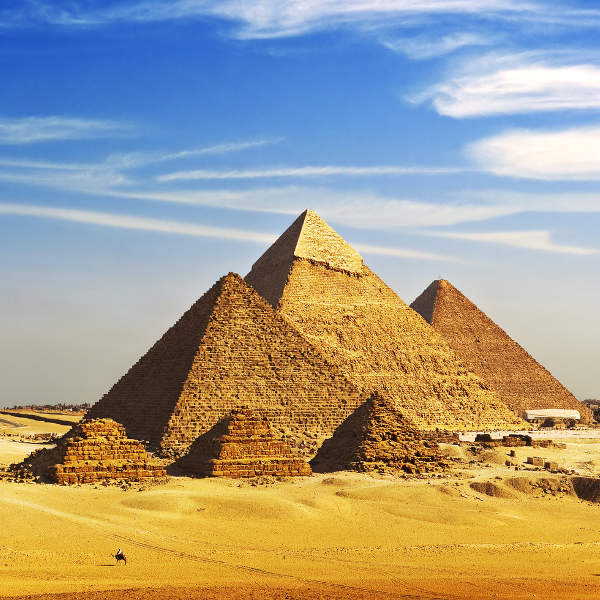
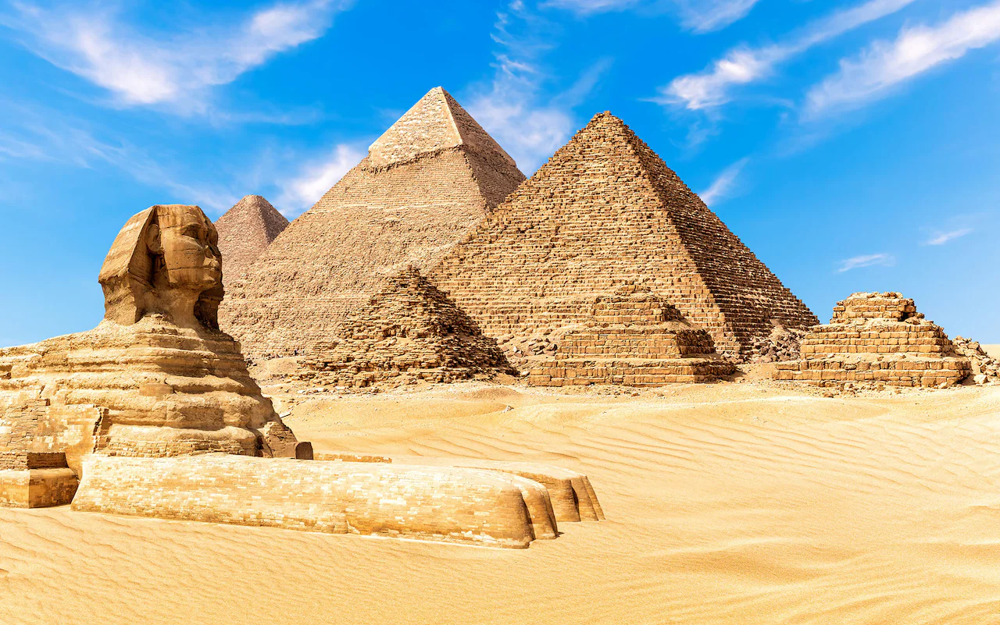
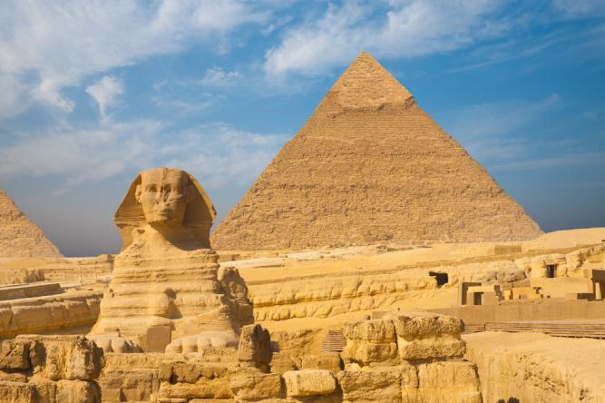
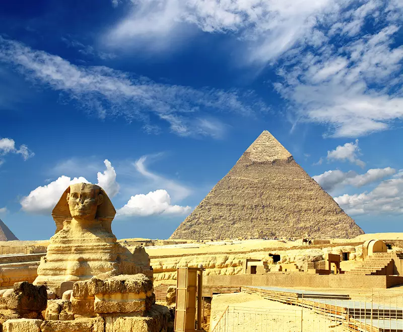
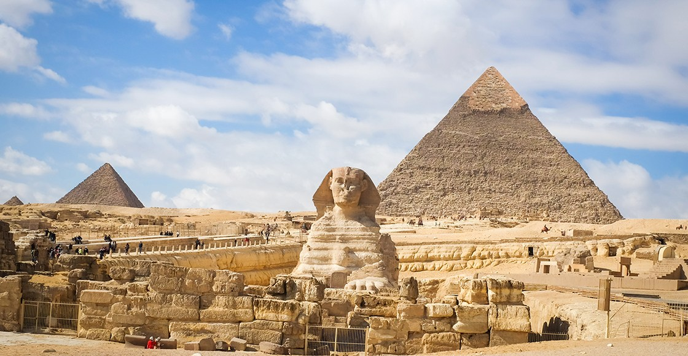
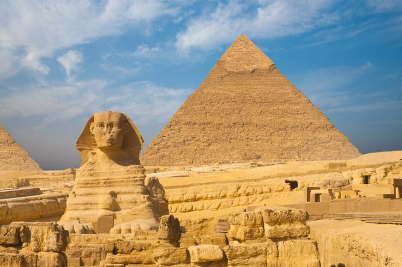
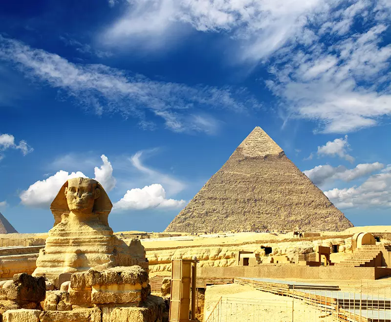
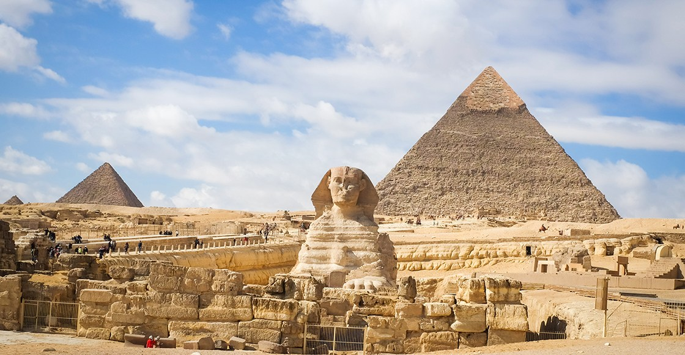

Ubicación: Egipto. Arquitecto: Hemiunu. Fecha de construcción: 2570 a.C. aproximadamente. Altura: 146,7 m (138,8 m en la actualidad). Estado: superficie desgastada.
La Gran Pirámide de Guiza es la única maravilla de la antigüedad que ha soportado el paso del tiempo. El hecho resulta aún más sorprendente si consideramos que tiene más de cuatro mil quinientos años. De hecho, las pirámides cuentan con un reconocimiento honorario en la lista de las Nuevas Maravillas del Mundo, publicada en 2007.
En realidad, en la necrópolis de Guiza podemos encontrar tres pirámides colosales, todas con fines funerarios. La más alta y antigua fue la pirámide de Keops. Esta sorprendió a los griegos por ser la construcción humana más alta del mundo conocido en aquel entonces.
 




